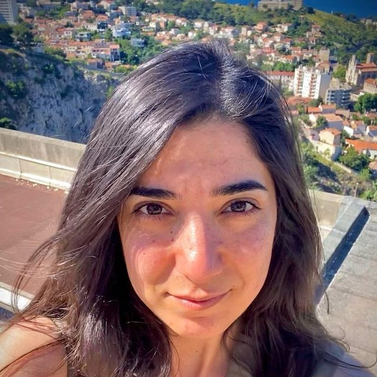

Sonia CHAABANE
IRD Researcher at CEREGE, France
Bonjour !
I am a marine ecologist and micropalaeontologist at the French Research Institute for Development (IRD), based at CEREGE in Aix-en-Provence. My research focuses on how marine plankton responds to climate change, particularly warming, ocean acidification, and deoxygenation. I use planktonic foraminifera, microscopic calcifying organisms, as bioindicators to understand how marine ecosystems have changed in the past and how they may evolve in the future.
My work bridges global biodiversity databases, trait-based ecology, high-throughput imaging, and artificial intelligence. I have been deeply involved in the development and synthesis of large international databases (such as FORCIS and DYNAMITE), aiming to transform scattered observations into coherent knowledge that can inform both science and society. A key motivation of my research is to improve our capacity to detect, quantify, and anticipate biological responses to global change at large spatial and temporal scales.
Before joining IRD, I trained in marine and environmental sciences in Spain (ICTA) and held postdoctoral positions in France (CEREGE; FRB) and Germany (MPIC). Beyond research, I am strongly committed to open science, capacity building, and international collaboration, particularly in West Africa.
Outside the lab, I enjoy fieldwork at sea, and sharing science through collaborative projects and mentoring.
Find more about my scientific work:
- Publications (HAL)
- ORCID
- Google Scholar
- FORCIS database (Scientific Data / Zenodo)
- R package forcis (rOpenSci / CRAN)
- Nature (2024)
- Science (2025)
- IRD — Laboratoire BISSAP-LUCAD
- IRD — Prix départemental pour la recherche en Provence 2025